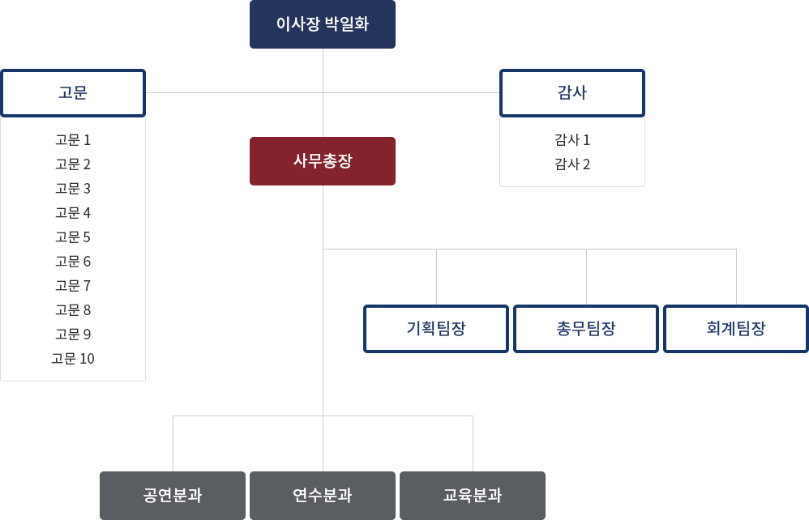

<? include "../inc/header.html"; ?>

<!-- 서브 비주얼 -->
<section class="subVisual subVisual01">
  <h2>우리봄은</h2>
</section>
<!-- 서브 비주얼 끝-->
<? include "../inc/sub_select.html"; ?>
<script>
  let thisPage = "#sub01";
</script>

<main class="subContents">
  <div class="sub_center">
    <h3 class="pageTitle">조직도</h3>
    <div class="operation">
      
    </div>
  </div>
</main>

<? include "../inc/footer.html"; ?>
<script src="../js/sub.js"></script>